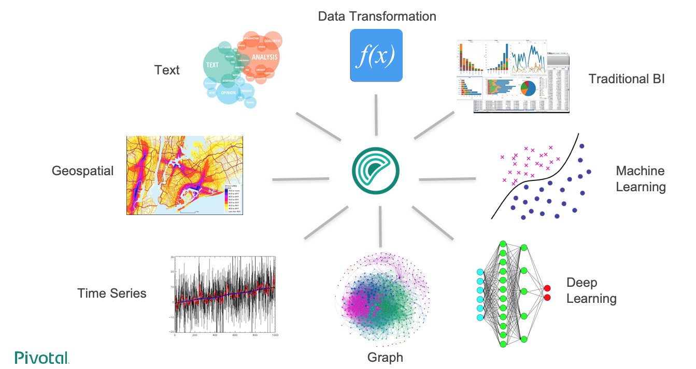

Overview of SynxDB Integrated Analytics
SynxDB offers a unique combination of a powerful, massively parallel processing (MPP) database and advanced data analytics. This combination creates an ideal framework for data scientists, data architects and business decision makers to explore artificial intelligence (AI), machine learning, deep learning, text analytics, and geospatial analytics.
The SynxDB Integrated Analytics Ecosystem

The following SynxDB analytics extensions are explored in different documentation sections, with installation and usage instructions:
Machine Learning and Deep Learning
The Apache MADlib extension allows SynxDB users to run different machine learning and deep learning functions, including feature engineering, model training, evaluation and scoring.
Geospatial Analytics
PostGIS is a spatial database extension for PostgreSQL that allows GIS (Geographic Information Systems) objects to be stored in the database. The SynxDB PostGIS extension includes support for GiST-based R-Tree spatial indexes and functions for analysis and processing of GIS objects.
Text Analytics
Text Analytics and Search enables processing of mass quantities of raw text data (such as social media feeds or e-mail databases) into mission-critical information that guides project and business decisions.
Programming Language Extensions
SynxDB supports a variety of procedural languages that you can use for programming database analytics. Refer to the linked documentation for installation and usage instructions.
Why SynxDB in Integrated Analytics
The importance of advanced analytics in its various forms is growing rapidly in enterprise computing. Key enterprise data typically resides in relational and document form and it is inefficient to copy data between systems to perform analytical operations. SynxDB is able to run both traditional and advanced analytics workloads in-database. This integrated capability greatly reduces the cost and the silos created by procuring and maintaining multiple tools and libraries.
SynxDB advanced analytics can be used to address a wide variety of problems in many verticals including automotive, finance, manufacturing, energy, government, education, telecommunications, on-line and traditional retail.
The SynxDB analytics capabilities allow you to:
- Analyze a multitude of data types – structured, text, geospatial, and graph – in a single environment, which can scale to petabytes and run algorithms designed for parallelism.
- Leverage existing SQL knowledge: SynxDB can run dozens of statistical, machine learning, and graph methods, via SQL.
- Train more models in less time by taking advantage of the parallelism in the MPP architecture and in-database analytics.
- Access the data where it lives, therefore integrate data and analytics in one place. SynxDB is infrastructure-agnostic and runs on bare metal, private cloud, and public cloud deployments.
- Use a multitude of data extensions. SynxDB supports Apache Kafka integration, extensions for HDFS, Hive, and HBase as well as reading/writing data from/to cloud storage, including Amazon S3 objects. Review the capabilities of the SynxDB Platform Extension Framework (PXF), which provides connectors that enable you to access data stored in sources external to your SynxDB deployment.
- Use familiar and leading BI and advanced analytics software that are ODBC/JDBC compatible, or have native integrations, including SAS, IBM Cognos, SAP Analytics Solutions, Qlik, Tableau, Apache Zeppelin, and Jupyter.
- Run deep learning algorithms using popular frameworks like Keras and TensorFlow in an MPP relational database, with GPU (Graphical Processing Unit) acceleration.
- Use containers capable of isolating executors from the host OS. SynxDB PL/Container implements a trusted language execution engine which permits customized data science workloads or environments created for different end user workloads.
- Use procedural languages to customize your analytics. SynxDB supports development in R, Python, Java, and other standard languages allowing you to distribute execution across the entire cluster to take advantage of the scale and parallelism.